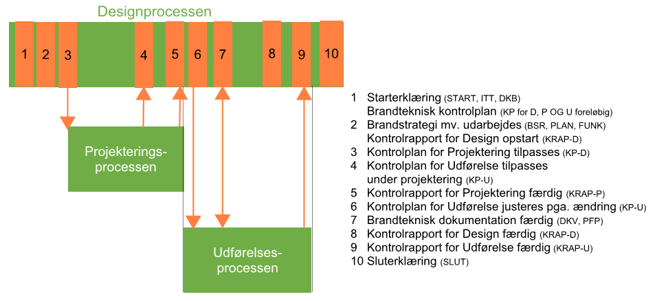

Swipe horisontalt for at se alle emner
Certificeret brandrådgivers virke (§ 545 - § 551)
- BR18 (Aktuelt)
- BR18 (1/7-31/12 2025)
- BR18 (1/1-30/6 2025)
- BR18 (1/7- 31/12 2024)
- BR18 (1/1- 30/06 2024)
- BR18 (1/1- 31/12 2023)
- BR18 (17/9 - 31/12 2022)
- BR18 (1/7 - 16/9 2022)
- BR18 (1/1 - 30/6 2022)
- BR18 (29/6 - 31/12 2021)
- BR18 (1/1-29/6 2021)
- BR18 (1/7-31/12 2020)
- BR18 (10/3-30/6 2020)
- BR18 (1/1-9/3 2020)
- BR18 (4/7-31/12 2019)
- BR18 (1/1-4/7 2019)
- BR18 (1/7-31/12 2018)
- BR18 (1/1-30/6 2018)
- BR15 (2015-2018)
- Tidligere BR (1961-2010)
Vejledning til BR18 kapitel 34, certificeret brandrådgivers virke
Indledning
Linket er kopieret
I denne vejledning beskrives den certificerede brandrådgivers virke med udgangspunkt i BR18, kapitel 34. Denne vejledning er primært rettet mod den certificerede brandrådgiver, mens Vejledning til dokumentation og kontrol af brandforhold er rettet mod alle byggeriets aktører.
I denne vejledning gennemgås og beskrives den certificerede brandrådgivers opgaver og virke, som der er krav om i bygningsreglementet.
I forhold til dokumentation og kontrol af brandtekniske forhold kan et byggeri opdeles i tre overordnede processer. Disse benævnes:
• designprocessen, hvor hovedparten af den overordnede brandtekniske dokumentation udfærdiges,
• projekteringsprocessen og
• udførelsesprocessen.
De tre processer overlapper ofte hinanden, men den certificerede brandrådgiver vil være involveret i alle tre processer på forskellige måder.
Gennem alle tre processer skal brandsikringen dokumenteres og kontrolleres. Indledningsvist sker dette ved udarbejdelse og kontrol af den brandtekniske dokumentation inkl. en brandteknisk kontrolplan. I de videre projekterings- og udførelsesprocesser er den certificerede brandrådgiver tilknyttet gennem den løbende vedligeholdelse af kontrolplanen og kontrol af kontrolrapporter for de projekterendes og de udførendes arbejder. Slutteligt inddrages den certificerede brandrådgiver ved den afsluttende kontrol af den samlede brandtekniske kontrolplan (som dækker både brandteknisk dokumentation samt projektering og udførelse af de brandtekniske tiltag) og udarbejdelsen af sluterklæring.
Designprocessen er den periode, hvor den overordnede disponering og planlægning af byggeriet sker, herunder fastlæggelse af den overordnede brandstrategi med tilhørende funktionskrav og andre forudsætninger. Disse krav og forudsætninger beskrives i de dokumenter, der indsendes til kommunen ved ansøgning om byggetilladelse sammen med starterklæringen, som beskrevet i BR18, kapitel 29. De øvrige brandtekniske dokumenter, som ikke fremsendes med ansøgning om byggetilladelse, udfærdiges efterfølgende af aktører, der ikke nødvendigvis indbefatter den certificerede.
| ID | Dokumenter | Ansøgning om byggetilladelse | Færdigmelding |
| START | Starterklæring | X | |
| SLUT | Sluterklæring | X | |
| DBK | Dokumentation for indplacering i brandklasse(r) | X | |
| ITT | Erklæring om byggeriet er indsatstaktisk traditionelt | X | |
| BSR | Brandstrategirapport | X | |
| PLAN | Brandplaner | X | |
|
PFP |
Pladsfordelingsplaner og belægningsplaner |
X | |
| DIM | Brandteknisk dimensionering | X | |
| FUNK | Funktionsbeskrivelse | X | |
| KP | Brandteknisk kontrolplan | X | |
| KRAP | Brandtekniske kontrolrapporter | X | |
| DKV | Drifts-, kontrol, og vedligeholdelsesplan (DKV-plan) | X |
Tabel 1: Dokumenter i designprocessen, som skal fremsendes til byggemyndighed, jf. BR18, § 23 og § 509.
Projekteringsprocessen er den periode, hvor de brandmæssige funktionskrav, forudsætninger mv. udarbejdes. Disse vil typisk blive udarbejdet af de projekterende aktører fra andre fagområder end den certificerede brandrådgivers.
Udførelsesprocessen er den periode, hvor det projekterede og hermed opfyldelsen af de brandmæssige funktionskrav, forudsætninger mv. udføres af de udførende.
BR18 stiller kun direkte krav til, at den certificerede brandrådgiver løser specifikke opgaver i designprocessen. I projekterings- og udførelsesprocesserne løser den certificerede brandrådgiver kun opgaver, hvis dette følger af krav i den brandtekniske kontrolplan.
På nedenstående figur ses et eksempel på en certificeret brandrådgivers deltagelse på et byggeprojekt, hvor udfærdigelse og tilpasning af de brandtekniske dokumenter er koblet til projekterings- og udførelsesprocesserne. Tilpasninger af kontrolplan kan f.eks. ske ved projektændringer eller ved kontrahering med entreprenører.

Figur 1: Eksempel på skematisk oversigt over relationer mellem design-, projekterings- og udførelsesprocessen på et byggeprojekt.
Vejledning til § 545
Linket er kopieret
Den certificerede brandrådgiver udpeges af bygningsejeren eller dennes repræsentant, som sammen med den certificerede brandrådgiver afklarer, om den certificerede brandrådgiver skal virke som udførende (benævnes efterfølgende den udarbejdende) eller som kontrollant på byggeriet.
Den udarbejdende certificerede brandrådgiver indgår i projektorganisationen og kan i den rolle både forestå udarbejdelsen og kontrollen af de brandtekniske dokumenter, med undtagelse af de specifikke dokumenter, hvor der er krav om afhængig kontrol.
Den kontrollerende certificerede brandrådgiver kan alene kontrollere de brandtekniske dokumenter og skal være uafhængig af projektorganisationen. Sidstnævnte omfatter, at den certificerede kontrollerende brandrådgiver ikke har medvirket ved udarbejdelse af dokumentationen for byggeriets brandsikkerhed, men det forhindrer ikke, at den certificerede brandrådgiver er ansat i den organisation eller den virksomhed, der udarbejder dokumentationen.
Den certificerede tredjepartskontrollant for brandforhold kan alene virke som kontrollant og må ikke være ansat i den organisation eller den virksomhed, der udarbejder dokumentationen.
Den certificerede brandrådgiver med virke som udarbejdende involveres tidligt i et byggeprojekt for at deltage i:
- udarbejdelsen og kontrollen af den brandtekniske dokumentation,
- planlægningen af kontrollen af projekteringen af de brandtekniske tiltag, og
- planlægningen af kontrollen af udførelsen af de brandtekniske tiltag.
Den certificerede brandrådgiver med virke som kontrollant involveres tidligt i et byggeprojekt for at deltage i:
- kontrollen af den brandtekniske dokumentation,
- kontrollen af planlægningen af kontrollen af projekteringen af de brandtekniske tiltag, og,
- kontrollen af planlægningen af kontrollen af udførelsen af de brandtekniske tiltag.
Planlægningen af kontrollen beskrives i den brandtekniske kontrolplan, som specificerer, hvordan kontroldokumentationen for hver enkelt kontrolgenstand skal udformes sådan, at den certificerede brandrådgiver i sin endelige kontrol af kontroldokumentationen kan vurdere, om kontrollen opfylder kriterierne, og om udfaldskrav til det kontrollerede forhold vurderes opfyldt. Kontrol, kontrolplan og kontrolrapport er beskrevet i Vejledning til dokumentation og kontrol af brandforhold.
Senere i projektforløbet vil den certificerede brandrådgiver udfærdige den brandtekniske kontrolrapport, som samler kontrolrapporter for design-, projekterings- og udførelsesprocesserne.
Den certificerede brandrådgiver skal både kontrollere form og indhold af kontrolrapporterne, før resultatet af den certificerede brandrådgivers kontrol beskrives i den brandtekniske kontrolrapport.
Vejledning til § 546
Linket er kopieret
Når den certificerede brandrådgiver virker som udarbejdende, skal vedkommende selv fastlægge de overordnede principper for brandsikringen af byggeriet. Den certificerede brandrådgiver skal som minimum ved ansøgning om byggetilladelse selv:
• udarbejde og godkende Dokumentation for indplacering i brandklasser, der fastlægger brandklasser og bygningsafsnit for bygningen, som beskrevet i Vejledning til dokumentation og kontrol af brandforhold samt den overordnede brandstrategi, således at brandsikringstiltag og brandsikkerhedsniveau er i overensstemmelse med definerede krav til sikkerhed, jf. BR18, kapitel 5.
• udarbejde og godkende Erklæring om byggeriet er indsatstaktisk traditionelt, jf. BR18’s Vejledning om indsatstaktisk traditionelt byggeri.
• udarbejde eller kontrollere samt godkende den brandtekniske kontrolplan, jf. Vejledning til dokumentation og kontrol af brandforhold, hvorved den certificerede brandrådgiver entydigt sikrer, at krav, jf. BR18, kapitel 5 og 29, fastholdes gennem alle byggeriets processer.
• udarbejde og godkende starterklæring
Bemærk at nogle af de ovenstående dokumenter skal udarbejdes af den certificerede brandrådgiver selv, mens andre dokumenter kan udarbejdes af andre aktører. I Vejledning til dokumentation og kontrol af brandforhold er de fire ovenstående dokumenter og deres indhold nærmere beskrevet.
Derudover skal den certificerede brandrådgiver:
• deltage i forbindelse med udarbejdelse af de brandtekniske løsninger, så brandforholdene er i overensstemmelse med definerede krav til sikkerhed og anvendelighed, jf. kapitel 5.
• koordinere, samle og deltage i udarbejdelsen af dokumentation for brandforhold, således at dokumentationen opfylder sit formål, jf. BR18, kapitel 29, herunder mindst foretage kontrol og evt. godkendelse, jf. tabel 2, af de øvrige dokumenter vedrørende brandforhold, som udarbejdes løbende gennem design-, projektering- og udførelsesprocessen.
Den certificerede brandrådgiver skal samle den brandtekniske dokumentation, udarbejde og godkende sluterklæring til indsendelse til myndighederne med den fuldstændige dokumentation for brandforhold i den færdige bygning inkl. dokumentation af kontrol, jf. BR18, kapitel 29 og 30.
Vejledning til § 547
Linket er kopieret
Den udarbejdende certificerede brandrådgivers virke skal opfylde og dokumentere dennes rolle som hhv. udarbejdende (U), kontrollerende (K) og godkendende (G) af dokumentation for brandforhold, samt at den certificerede brandrådgiver har koordineret og samlet dokumentation for brandforhold på en tilfredsstillende måde, som godtgør, at de udarbejdede dokumenter til ansøgning om byggetilladelse er dækkende, tilstrækkelige og viser, at projektets grundlag og bygningsreglementets brandkrav, jf. kapitel 5, er opfyldt.
| Emne | BK2 | BK3 | BK4 |
| Dokumentation for indplacering i brandklasse(r) | U+G | U+G | U+G |
| Erklæring om byggeriet er indsatstaktisk traditionelt | U+G | U+G | U+G |
| Brandstrategirapport | Kmax + G | Kmax + G | U+G |
| Brandplaner | Kudv | Kmax | Kmax |
| Pladsfordelingsplaner og belægningsplaner | Kudv | Kudv | Kudv |
| Brandteknisk dimensionering | - |
Kudv + G | Kmax + G |
| Funktionsbeskrivelse | Kudv | Kudv | Kmax |
| Brandteknisk kontrolplan | Kmax + G | U + G | U + G |
| Brandtekniske kontrolrapporter |
Kudv | Kmax | Kmax |
| Drifts-, kontrol, og vedligeholdelsesplan | Kudv | Kudv | Kmax |
Tabel 2 - Minimumskrav til den certificerede brandrådgivers virke som udarbejdende af den brandtekniske dokumentation.
Udarbejde (U)
Når den certificerede brandrådgiver virker som udarbejdende, er en del af dennes ydelse selv at udarbejde centrale dele af dokumentation for brandforhold, jf. BR18, bilag 5, tabel 1. Udarbejdelsen består i, at den certificerede brandrådgiver selv har tilrettelagt og udformet de centrale dele af dokumentationen. Udarbejdelse kan ske, som beskrevet i vejledning til BR18, kapitel 32 ved model a1) eller a2).
Kontrollere (K)
Når den certificerede brandrådgiver virker som udarbejdende, er det en del af dennes ydelse at foretage kontrol af eventuelle andre designendes, projekterendes og udførendes dokumentation. Kontrollens niveau fastlægges for designprocessen, jf. tabel 2, og for projekterings- og udførelsesprocessen, som beskrevet i Vejledning til dokumentation og kontrol af brandforhold. Kontrol kan ske, som beskrevet i vejledning til BR18, kapitel 32 ved model b1), b2) eller c), hvor model c) kun kan benyttes i tilfælde, hvor den certificerede brandrådgiver mangler specifikke kompetencer inden for brandtekniske specialistområder.
Bemærk, at den certificerede brandrådgiver ikke kan regnes som uafhængig kontrollant på projektet, når vedkommende er udarbejdende, hvilket medfører, at brandstrategirapport og brandteknisk kontrolplan derfor skal kontrolleres uafhængigt af en anden kompetent aktør – eller ved, at den certificerede udarbejder dokumentet i stedet for at kontrollere.
Godkende (G)
Når den certificerede brandrådgiver virker som udarbejdende, er en del af dennes ydelse at godkende dokumentation for brandforhold. Godkendelsen tilkendegiver, at den certificerede brandrådgiver er bekendt med dokumentationens indhold, samt at denne er udarbejdet og kontrolleret i overensstemmelse med BR18, kapitel 29 og 30, samt erklære, at dokumentationen kan anvendes, som den foreligger.
En certificeret brandrådgiver kan som udarbejdende vælge selv at udarbejde flere dokumenter, end minimumskravet i tabel 2 tilsiger. I dette tilfælde erstattes kravet om kontrol af en certificeret brandrådgiver i brandklasse 2 af en uafhængig kontrol for brandstrategi og brandteknisk kontrolplan.
For de øvrige dokumenter i brandklasse 2 erstattes kravet om uafhængig kontrol af en kontrol, udført af anden kompetent person, som f.eks. har deltaget på projektet.
For byggeri i brandklasse 3 og 4, hvor den certificerede brandrådgiver vælger at udarbejde dokumenter, hvor minimumskravet i tabel 2 kun tilsiger kontrol, erstattes kravet om kontrol af en certificeret brandrådgiver af en uafhængig kontrol, da alle brandtekniske dokumenter i brandklasse 3 og 4 skal kontrolleres uafhængigt.
Hvis den certificerede brandrådgiver, med virke som udarbejdende, har indhentet assistance fra en kompetent meddesigner eller medkontrollant til udarbejdelse eller kontrol af et brandteknisk dokument (model a2 eller b2) i figur 1 i vejledning til BR18, kapitel 32, skal den certificerede brandrådgiver sikre, at arbejdet er gennemført og dokumenteret, som hvis den certificerede selv havde udført det. Dette indebærer planlægning, styring af kvaliteten af den udførte kontrol og kontrol af det udarbejdede materiale, hvilket der redegøres for i den tilhørende kontrolrapport.
Hvis den certificerede brandrådgiver, med virke som udarbejdende, har indhentet anden kompetent assistance til uafhængig kontrol af et brandteknisk dokument (model c) i figur 1 i vejledning til BR18, kapitel 32, skal den certificerede kontrollant udføre en minimumskontrol og i en separat kontrolrapport redegøre for, hvordan det er sikret, at kontrollen er gennemført og dokumenteret. Dette indebærer planlægning og styring af kvaliteten af den udførte kontrol samt kontrol af både det kontrollerede materiale og den tilhørende kontrolrapport. Begge kontrolrapporter indgår i dette tilfælde senere i den samlede brandtekniske kontrolrapport for projektet.
Forud for færdiggørelsen af sluterklæringen bør den certificerede brandrådgiver indhente de designendes, projekterendes og udførendes kommentarer til resultatet af kontrollen, for derved at undgå misforståelser eller fejl. Den certificerede brandrådgiver skal tage hensyn til faktuelle kommentarer og kan vælge at lade forskelle i vurderinger fremgå af den brandtekniske kontrolrapport eller sluterklæringen.
Vejledning til § 548
Linket er kopieret
Den certificerede brandrådgiver virker som kontrollant, når denne kontrollerer dokumentationen for brandforhold på et byggeprojekt. Den certificerede brandrådgiver skal som kontrollant påse, at de udarbejdede dokumenter til ansøgning om byggetilladelse er dækkende, tilstrækkelige og viser, at projektets grundlag og bygningsreglementets brandkrav, jf. kapitel 5, er opfyldt, og herunder som minimum:
• kontrollere Dokumentation for indplacering i brandklasser, som fastlægger brandklasser og bygningsafsnit som beskrevet i Vejledning til dokumentation og kontrol af brandforhold.
• kontrollere, at de beskrevne brandmæssige tiltag i den overordnede brandstrategi er i overensstemmelse med BR18, kapitel 5.
• kontrollere, om bygningen er indsatstaktisk traditionel mht. indretning og placering mv. i overensstemmelse med Erklæringen om at byggeriet er indsatstaktisk traditionelt, jf. de indsatsrelaterede forhold i bygningsreglementets vejledninger til kapitel 5.
• kontrollere, at den brandtekniske kontrolplan på tilstrækkelig vis sikrer, at de brandtekniske tiltag og forudsætninger fastholdes og kontrolleres gennem design, projektering og udførelse, jf. Vejledning til dokumentation og kontrol af brandforhold.
• udarbejde og godkende starterklæring.
En certificeret kontrollant må ikke udarbejde de brandtekniske dokumenter, men alene kontrollere dem samt udarbejde start- og sluterklæring.
Den certificerede brandrådgiver skal derefter som minimum:
• kontrollere, at de i den brandtekniske dokumentation beskrevne løsninger for brandsikringstiltag er i overensstemmelse med kravene i BR18, kapitel 5.
• kontrollere, at dokumentationen for brandforholdene opfylder sit formål, jf. BR18, kapitel 29, herunder mindst foretage kontrol, jf. BR18, bilag 5, tabel 2, af de øvrige dokumenter for brandforhold, der er udarbejdet i design, projektering og udførelsesfaserne. Se beskrivelser i Vejledning til dokumentation og kontrol af brandforhold.
Den certificerede brandrådgiver kan foretage kontrol, som beskrevet i vejledning til BR18, kapitel 32 ved model b1), b2) eller c), hvor model c) kun kan benyttes i tilfælde, hvor den certificerede brandrådgiver mangler specifikke kompetencer inden for brandtekniske specialistområder.
Den certificerede brandrådgiver skal som kontrollant udarbejde og godkende sluterklæring til indsendelse til myndighederne med den fuldstændige brandtekniske dokumentation, jf. BR18, kapitel 29 og 30.
Vejledning til § 549
Linket er kopieret
Den certificerede brandrådgiver skal som kontrollant kontrollere de dele af den brandtekniske dokumentation på minimum de kontrolniveauer, som følger af tabel 3. Den certificerede brandrådgiver skal som kontrollant være uafhængig af projektorganisationen, hvilket sikrer, at vedkommende kan udføre uafhængig kontrol, når dokumenterne udarbejdes og godkendes af andre aktører. Den certificerede brandrådgiver, der virker som kontrollant, må dermed ikke have deltaget i fastlæggelsen af strategien for brandsikring eller have udfærdiget et eller flere brandtekniske dokumenter i relation til projektet.
| Emne | BK2 | BK3 | BK4 |
| Dokumentation for indplacering i brandklasse(r) | Max. | Max. | Max. |
| Erklæring om byggeriet er indsatstaktisk traditionelt | Max. | Max. | Max. |
| Brandstrategirapport | Max. | Max. | Max. |
| Brandplaner | Udv. |
Max. |
Max. |
| Pladsfordelingsplaner og belægningsplaner | Udv. |
Udv. | Udv. |
| Brandteknisk dimensionering | - |
Udv. |
Max. |
| Funktionsbeskrivelse | Udv. |
Max. |
Max. |
| Brandteknisk kontrolplan | Max. | Max. | Max. |
| Brandtekniske kontrolrapporter | Udv. | Max. | Max. |
| Drifts-, kontrol, og vedligeholdelsesplan | Udv. | Udv. |
Max. |
Tabel 3 - Minimumskrav til den certificerede brandrådgivers virke som kontrollant af den brandtekniske dokumentation.
Kontrolniveau
For certificerede brandrådgivere er der defineret tre kontrolniveauer: Minimumskontrol (Min.), Udvidet kontrol (Udv.) og Maksimumskontrol (Max.), som beskrevet i Vejledning til dokumentation og kontrol af brandforhold.
Der er ikke retningslinjer for den certificerede brandrådgivers virke som kontrollant af byggerier i brandklasse 1, da der i brandklasse 1 ikke kræves en certificeret brandrådgiver.
Kontrolomfang
Kontrolomfang af den brandtekniske dokumentation omfatter som hovedregel alle brandtekniske dokumenter med enkelte undtagelser, som beskrevet i Vejledning til dokumentation og kontrol af brandforhold.
Kontrolomfang omfatter hele byggeriet, hvortil der er ansøgt byggetilladelse og er beskrevet i den brandtekniske kontrolplan, som den certificerede brandrådgiver har kontrolleret før indsendelsen af starterklæringen.
Resultatet af den certificerede brandrådgivers kontrol
Kontrolomfanget og resultatet af kontrollen beskrives enten direkte i den brandtekniske kontrolrapport eller i en særskilt kontrolrapport for den enkelte kontrolgenstand. Denne kontrolrapport indgår da senere i den samlede brandtekniske kontrolrapport for projektet.
Hvis den certificerede brandrådgiver, med virke som kontrollant, har indhentet assistance fra en kompetent medkontrollant til kontrol af et brandteknisk dokument (model b2) i figur 1 i vejledning til BR18, kapitel 32, skal den certificerede brandrådgiver sikre, at kontrollen er gennemført og dokumenteret, som hvis den certificerede brandrådgiver selv havde udført den. Dette indebærer planlægning og styring af kvaliteten af den udførte kontrol, hvilket der redegøres for i den tilhørende kontrolrapport.
Hvis den certificerede brandrådgiver, med virke som kontrollant, har indhentet anden kompetent assistance til kontrol af et brandteknisk dokument (model c) i figur 1 i vejledning til BR18, kapitel 32, skal den certificerede kontrollant udføre en minimumskontrol og i en separat kontrolrapport redegøre for, hvordan det er sikret, at kontrollen er gennemført og dokumenteret. Dette indebærer planlægning og styring af kvaliteten af den udførte kontrol samt kontrol af både det kontrollerede materiale og den tilhørende kontrolrapport. Begge kontrolrapporter indgår da senere i den samlede brandtekniske kontrolrapport for projektet.
Forud for færdiggørelsen af sluterklæringen bør den certificerede brandrådgiver indhente de designendes, projekterendes og udførendes kommentarer til resultatet af kontrollen, for derved at undgå misforståelser eller fejl. Den certificerede brandrådgiver skal tage hensyn til faktuelle kommentarer og kan vælge at lade forskelle i vurderinger fremgå af den brandtekniske kontrolrapport eller sluterklæringen.
Vejledning til § 550
Linket er kopieret
Den certificerede brandrådgiver skal som tredjepartskontrollant som minimum kontrollere den brandtekniske dokumentation på de kontrolniveauer, som følger af tabel 4.
Herudover skal tredjepartskontrollanten udfærdige starterklæring ved ansøgning om byggetilladelse og sluterklæring ved ansøgning om ibrugtagningstilladelse.
Tredjepartskontrollen omfatter de dele af et byggeri, der er omfattet af brandklasse 4. Andre dele af byggeriet skal i det omfang virkemåde og dokumentation har betydning for den del af byggeriet, der er i brandklasse 4, også kontrolleres af den certificerede tredjepartskontrollant.
Formålet med kontrollen er at sikre, at de i den brandtekniske dokumentation beskrevne løsninger for brandsikringstiltag opfylder bestemmelserne i BR18, kapitel 5, og at dokumentationen for brandforholdene opfylder sit formål, jf. BR18, kapitel 29 og 30.
Tredjepartskontrollanten udfærdiger for hver kontrol en kontrolrapport, som beskriver forudsætningerne, omfanget, form og resultatet af den udførte kontrol.
| Emne | Tredjepart |
| Dokumentation for indplacering i brandklasse(r) | Max. |
| Erklæring om byggeriet er indsatstaktisk traditionelt | Max. |
| Brandstrategirapport | Max. |
| Brandplaner | Max. |
| Pladsfordelingsplaner og belægningsplaner | Udv. |
| Brandteknisk dimensionering | Udv. |
| Funktionsbeskrivelse | Udv. |
| Brandteknisk kontrolplan | Max. |
| Brandteknisk kontrolrapporter | Udv. |
| Drifts-, kontrol, og vedligeholdelsesplan | Udv. |
Tabel 4 - Minimumskrav til certificeret tredjepartskontrol af den brandtekniske dokumentation.
Tredjepartskontrollanten kan foretage kontrol, som beskrevet i vejledning til BR18, kapitel 32 ved model b1), b2) eller c), hvor model c) kun kan benyttes i tilfælde, hvor den certificerede brandrådgiver mangler specifikke kompetencer inden for brandtekniske specialistområder.
Hvis tredjepartskontrollanten har indhentet assistance fra en kompetent medkontrollant til kontrol af et brandteknisk dokument (model b2) i figur 1 i vejledning til BR18, kapitel 32, skal tredjepartskontrollanten sikre, at kontrollen er gennemført og dokumenteret, som hvis tredjepartskontrollanten selv havde udført den. Dette indebærer planlægning og styring af kvaliteten af den udførte kontrol. Hvis tredjepartskontrollanten har indhentet anden assistance til kontrol af et brandteknisk dokument (model c) i figur 1 i vejledning til BR18, kapitel 32, skal tredjepartskontrollanten udføre en minimumskontrol og redegøre for, hvordan det er sikret, at kontrollen er gennemført og dokumenteret.
Dette indebærer planlægning og styring af kvaliteten af den udførte kontrol samt kontrol af både det kontrollerede materiale og den tilhørende kontrolrapport.
Tredjepartskontrollanten skal i sin redegørelse alene medtage faktuelle forhold i relation til overholdelse af bygningsreglementets bestemmelser og skal ikke angive forhold, som kunne være løst på anden vis.
Tredjepartskontrollanten udarbejder til sidst en sluterklæring, som angiver forhold, jf. BR18, § 509, stk. 2, og evt. forbehold fra den udførte kontrol angives.
Vejledning til § 551
Linket er kopieret
Ved overdragelse af et projekt, hvor der er meddelt byggetilladelse, men ikke indsendt sluterklæring fra én certificeret brandrådgiver til en anden, kan den overdragende certificerede brandrådgiver udarbejde en erklæring, der omfatter:
• Starterklæring med tilhørende dokumenter indsendt ved myndighedsandragende.
• Beskrivelser af, om den overdragende certificerede brandrådgiver har virket som udarbejdende eller kontrollant.
• Hvilke dokumenter, den overdragende certificerede brandrådgiver har udarbejdet og/eller kontrolleret, og om dokumenterne er endelige eller udkast.
• Status for gennemførelse af kontroller, jf. den brandtekniske kontrolplan og de brandtekniske kontrolrapporter.
• Kritiske punkter i projektet, som kræver særlig opmærksomhed fra den certificerede brandrådgiver, der overtager projektet, f.eks. afvigelser fra bygningsreglementets vejledninger til kapitel 5 - Brand, eller forhold, der gør, at byggeriet ikke er indsatstaktisk traditionelt.
Den certificerede brandrådgiver, der overtager et projekt, vurderer på baggrund af erklæringen i hvilket omfang, det er nødvendigt at foretage en maksimal kontrol af den overdragede brandtekniske dokumentation forud for videreførelse af projekteringen og/eller udførelsen. Der redegøres for denne vurdering i den brandtekniske kontrolrapport. Beskrivelsen skal resumeres i sluterklæringen.
Hvis det ikke er muligt at modtage ovenstående erklæring i forbindelse med overdragelse af projektet, skal den certificerede brandrådgiver, der får overdraget projektet, foretage en kontrol af alle dokumenter svarende til virket for certificeret brandrådgiver som kontrollant, som beskrevet ovenfor.
Ved overdragelse af et projekt, hvor der er meddelt byggetilladelse, men ikke indsendt sluterklæring fra én tredjepartskontrollant til en anden, kan overdragelsen ske tilsvarende som for den certificerede brandrådgiver.